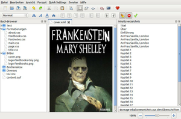

Sigil
Dieser Artikel wurde für die folgenden Ubuntu-Versionen getestet:
Ubuntu 16.04 Xenial Xerus
Ubuntu 14.04 Trusty Tahr
Zum Verständnis dieses Artikels sind folgende Seiten hilfreich:
Sigil  ist ein Werkzeug zur Erstellung von E-Books (elektronischen Büchern) im EPUB-Format. Dabei stehen die verschiedenen Arbeitsschritte, um aus einem Rohtext ein standardkonformes E-Book zu erstellen, im Vordergrund. Da die Anwendung durch die Verwendung der Grafikbibliothek Qt 5 plattformunabhängig ist, steht sie auch für andere Betriebssysteme zur Verfügung.
ist ein Werkzeug zur Erstellung von E-Books (elektronischen Büchern) im EPUB-Format. Dabei stehen die verschiedenen Arbeitsschritte, um aus einem Rohtext ein standardkonformes E-Book zu erstellen, im Vordergrund. Da die Anwendung durch die Verwendung der Grafikbibliothek Qt 5 plattformunabhängig ist, steht sie auch für andere Betriebssysteme zur Verfügung.
Funktionen:
Vollständige Unterstützung der EPUB 2-Spezifikation (aber bisher kein EPUB 3)
Import von Text-, HTML- und EPUB-Dateien
WYSIWYG-Bearbeitung
Unterstützung folgender Bildformate: JPG, GIF, PNG und SVG
umfangreicher Metadaten-Editor
Integration von Tidy für validen Code
Ein EPUB-Validierungs-Werkzeug (flightcrew) informiert zusätzlich über fehlende Metadaten, nicht benutzte Bilder usw.
Vollständige Unterstützung des Unicode-Zeichensatzes
Via Suchen und Ersetzen können reguläre Ausdrücke (dateiübergreifend) eingesetzt werden
Wer Webseiten in E-Books umwandeln möchte, sollte sich die Firefox-Erweiterung GrabMyBooks anschauen.
Installation¶
 Das Programm ist ab Ubuntu 15.10 in den offiziellen Paketquellen enthalten. Folgendes Paket muss installiert werden [1]:
Das Programm ist ab Ubuntu 15.10 in den offiziellen Paketquellen enthalten. Folgendes Paket muss installiert werden [1]:
sigil (universe)
 mit apturl
mit apturl
Paketliste zum Kopieren:
sudo apt-get install sigil
sudo aptitude install sigil
PPA¶
Unter Ubuntu 14.04 kann die Version 0.8 aus einem "Personal Package Archiv" (PPA) [2] installiert werden. Eine deutlich ältere Version steht als Fremdpaket zur Verfügung.
Adresszeile zum Hinzufügen des PPAs:
ppa:sunab/sigil-git
Hinweis!
Zusätzliche Fremdquellen können das System gefährden.
Ein PPA unterstützt nicht zwangsläufig alle Ubuntu-Versionen. Weitere Informationen sind der  PPA-Beschreibung des Eigentümers/Teams sunab zu entnehmen.
PPA-Beschreibung des Eigentümers/Teams sunab zu entnehmen.
Damit Pakete aus dem PPA genutzt werden können, müssen die Paketquellen neu eingelesen werden.
Nach dem Aktualisieren der Paketquellen erfolgt die Installation wie oben angegeben.
Bedienung¶
|  |
| EPUB-Struktur - Cover - Inhaltsverzeichnis |
Starten lässt sich Sigil bei Ubuntu-Varianten mit einem Anwendungsmenü über den Eintrag "Büro -> Sigil" [7]. Prinzipiell kann man das Programm auch direkt zum Schreiben eines E-Books nutzen. Empfehlenswert ist allerdings die übliche Trennung zwischen Inhalt und Layout – sprich, den Buchsatz erst im Anschluss an die schriftstellerische Tätigkeit durchzuführen.
Wer an dieser Stelle eine Einführung in die Erstellung von E-Books im EPUB-Format erwartet, wird enttäuscht sein. Wer keine Vorkenntnisse besitzt, dem wird auch ein Werkzeug wie Sigil nichts nützen. Grundkenntnisse in HTML und CSS sind eine zwingende Voraussetzung (siehe auch SelfHTML). Als Einführung in das Thema sind – neben vorhandenen Inhalten (in Form von Texten, Bildern etc.) – beispielsweise Beiträge wie epub mit Sigil  hilfreich.
hilfreich.
Webdesigner werden sich dagegen wie zu Hause fühlen. So kann man bequem zwischen Layout- und Quellcode-Ansicht hin- und herschalten oder ein Inhaltsverzeichnis aus vorhandenen Überschriften (h1, h2 usw.) erstellen. Texte, Bilder und Stylesheets lassen sich mit Rechtsklick  im Buch-Browser (linke Spalte) importieren. Das Einbinden eigener Zeichensätze (Fonts) sollte dagegen gründlich überdacht werden, da hier wie im Internet die Maxime gilt: ein E-Book ist kein Druckerzeugnis. So geht man einerseits Inkompatibilitäten mit E-Book-Reader-Hardware aus dem Weg. Andererseits blähen eingebundene Zeichensätze die Dateigröße auf, was manche Online-Buchhändler mit einer geringeren Autorenvergütung honorieren.
im Buch-Browser (linke Spalte) importieren. Das Einbinden eigener Zeichensätze (Fonts) sollte dagegen gründlich überdacht werden, da hier wie im Internet die Maxime gilt: ein E-Book ist kein Druckerzeugnis. So geht man einerseits Inkompatibilitäten mit E-Book-Reader-Hardware aus dem Weg. Andererseits blähen eingebundene Zeichensätze die Dateigröße auf, was manche Online-Buchhändler mit einer geringeren Autorenvergütung honorieren.
Verschiedene Werkzeuge helfen bei der abschließenden Validierung des Codes. Nicht vergessen sollte man auch das Erstellen der Metadaten. Den Editor dazu erreicht man über "Bearbeiten -> Meta-Editor" oder F8 . Die hier hinterlegten Angaben dienen später zur Katalogisierung und Sortierung einer E-Book-Sammlung.
In der Praxis kann folgender Workflow sinnvoll sein:
Umwandlung bestehender Inhalte mit Calibre oder der LibreOffice Erweiterung Writer2ePub
Feinschliff der .epub-Datei mit Sigil
Kontrolle mit einem EPUB-Reader
Man kann sich auch – ähnlich wie bei Internetseiten über die Quellcode-Ansicht – von anderen E-Books inspirieren lassen. Ein Beispiel: Feedbooks - Gemeinfreie Werke
Einstellungen¶
 Alle Programmeinstellungen sind unter "Bearbeiten -> Einstellungen" zu finden. Gespeichert werden die Konfiguration in zwei Ordnern:
Alle Programmeinstellungen sind unter "Bearbeiten -> Einstellungen" zu finden. Gespeichert werden die Konfiguration in zwei Ordnern:
~/.config/Strahinja Markovic/Sigil.conf und
~/.local/share/data/Strahinja Markovic/Sigil/
Tastaturkürzel¶
Effektives Arbeiten ist nur mit Kenntnis der zahlreichen Tastaturkürzel möglich. Die Vorbelegung findet man unter "Bearbeiten -> Einstellungen -> Tastaturkürzel", diese kann geändert werden.
Sprachanpassung¶
Bei der Gelegenheit kann man gleich die Standardsprache des Metadaten-Editors und der Rechtschreibprüfung überprüfen bzw. einstellen. Sigil liefert bereits Wörterbücher für Englisch, Französisch, Spanisch und Deutsch mit. Weitere Wörterbücher können über das LibreOffice Extensions Center heruntergeladen und mit Root-Rechten [4] in den Ordner /usr/share/sigil/dictionaries/ kopiert werden.
Experten-Info:
LibreOffice Erweiterungen werden im komprimierten Format .oxt angeboten. Die benötigten .dic- und .aff-Dateien lassen sich mit einem Archivmanager entpacken.
EPUB Reader¶
Um das Endergebnis zu prüfen, stehen verschiedene Leseprogramme zu Verfügung:
Calibre - E-Book Management
CoolReader - E-Book-Reader
EPUBReader
- Firefox-ErweiterungFBReader - Lesen und Verwalten von E-Books
Lucifox
- Firefox-ErweiterungOkular - KDE-Programm
Problembehebung¶
Programm lässt sich nicht starten¶
Sigil benötigt einen Prozessor mit Unterstützung für SSE2. Vorab prüfen kann man das mit dem Befehl [3]:
grep sse2 /proc/cpuinfo
Erfolgt eine Ausgabe, so wird der Prozessor unterstützt.
Digital Rights Management¶
Das Programm eignet sich nicht zur Umsetzung von Kopierschutzmaßnahmen (oder deren Entfernung). Dazu braucht man ein anderes Betriebssystem sowie entsprechende Software oder nutzt einen kommerziellen Online-Konvertierungsdienst.
EPUB-Erstellung auf der Kommandozeile¶
Bis einschließlich Version 0.5.3 bietet Sigil eine rudimentäre, nicht dokumentierte Kommandozeilenversion, um aus einer HTML- eine EPUB-Datei zu erzeugen:
sigil EINGABE.html AUSGABE.epub
Wer diese Funktion benötigt, muss weiterhin die ältere Version nutzen. Diese steht zwar nur als Fremdpaket sigil_0.5.3-0rg0~oneiric1_ARCHITEKTUR.deb  zur Verfügung, dass sich jedoch erfolgreich unter Ubuntu 14.04 installieren ließ.
zur Verfügung, dass sich jedoch erfolgreich unter Ubuntu 14.04 installieren ließ.
Links¶
Sigil - Wikipedia
Das Auge liest mit – E-Books verschönern
- Werkzeugsammlung und Links, c't 01/2013E-Books schreiben und bearbeiten mit Sigil
- heise Open Source, 10/2012E-Book-Erstellung aus LaTeX und HTML
- Blogbeitrag 10/2012Sigil – ein netter Editor für E-Books
- Blogbeitrag, 03/2012E-Books – prima selbstgemacht!
- Übersicht zu E-Book-Formaten. Blogbeitrag, 02/2012EPUB selbst erstellen
- Blogbeitrag, 09/2009EPUB Validator
- EPUB-Syntax online überprüfen
- Erstellt mit Inyoka
-
 2004 – 2017 ubuntuusers.de • Einige Rechte vorbehalten
2004 – 2017 ubuntuusers.de • Einige Rechte vorbehalten
Lizenz • Kontakt • Datenschutz • Impressum • Serverstatus -
Serverhousing gespendet von